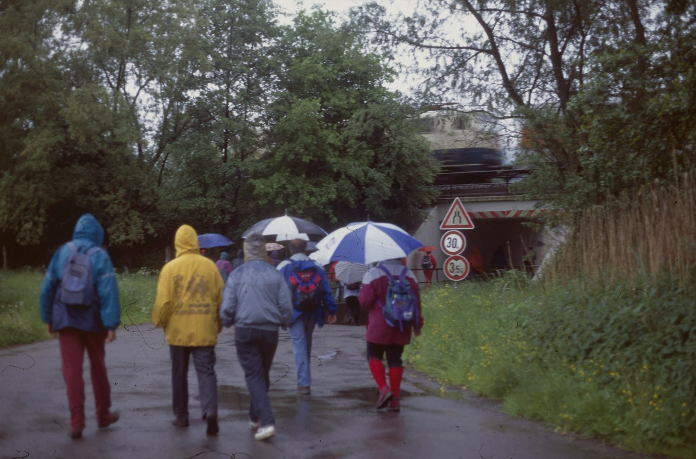
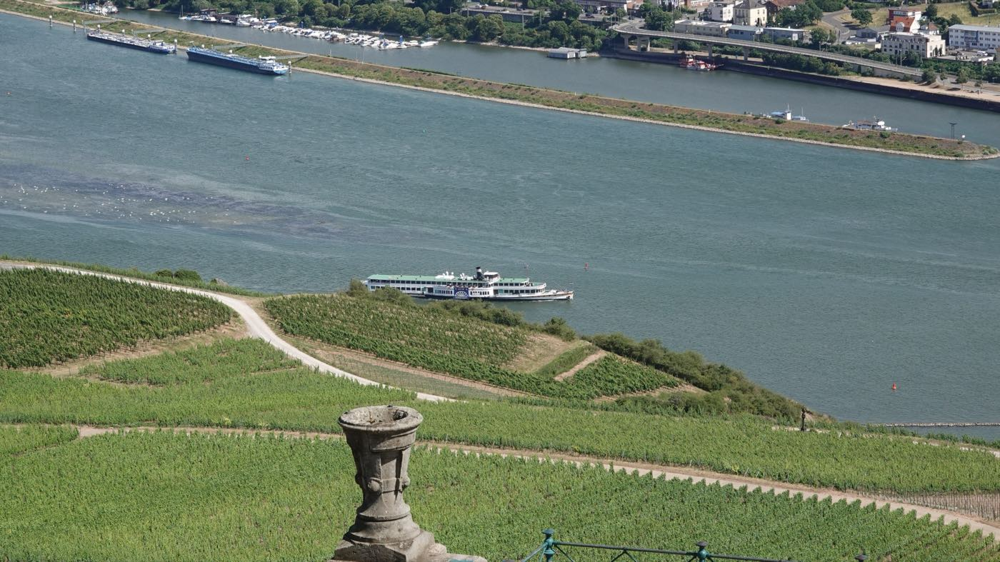

Wanderfahrt 2026
In den Taunus nach Bad Camberg
Einmal im Jahr laden die SVS zu einer gemeinsamen Ausflugsfahrt auf der Schiene ein. In diesem Jahr geht es zum Baumwipfelpfad im Camberger Stadtwald.
Wanderfahrt in den Taunus
Bad Camberg
Sonntag, 27. September 2026
Diesmal ist der Baumwipfelpfad östlich der Kneipp-Kurstadt Bad Camberg unser Ziel. Durch die Altstadt und die Kuranlagen wandern wir in den Camberger Stadtwald zum Fischbacher Kopf, wo der Pfad in bis zu 30 Metern Höhe durch die Buchenkronen führt – mit Ausblicken bis zum Feldberg.
Erfrischung gibt es in der Baumkronen Lodge, zurück geht es über die Kreuzkapelle. Zum Abschluss kehren wir direkt am Bahnhof im Restaurant „Camberger“ ein.
Gesamte Wanderstrecke: rund neun Kilometer, gut begehbar.
Hinfahrt
- 09:29 Frankfurt (Main) Hbf
- RB 22 · direkt über Frankfurt-Höchst
- 10:16 Bad Camberg
Rückfahrt
- 18:43 Bad Camberg
- 19:29 Frankfurt (Main) Hbf
Teilnahme
14,00 €
mit eigener Fahrkarte
Teilnahme
19,00 €
einschließlich Hessenticket
Wanderstrecke
rund 9 km
Eintritt zum Baumwipfelpfad enthalten
Anmeldung bis Freitag, 25. September 2026
bei Peter Illert – telefonisch unter 06103 68716 oder per E-Mail an peter.illert (ät) t-online.de. Bitte geben Sie dabei an, ob Sie mit eigener Fahrkarte oder auf Hessenticket fahren.
Aus früheren Jahren
Bei jedem Wetter
Die Wanderfahrten der SVS sind abwechslungs- und erlebnisreich. Das Wetter trägt seinen Teil dazu bei.

